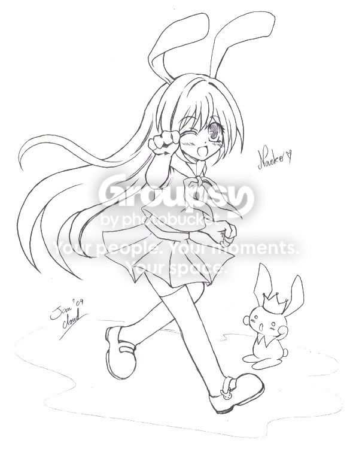

ขอบคุณทุกคอมเมนท์และทุกคนที่ชอบผลงานนะคะ^^
ปีใหม่แล้วขอให้ทุกท่านพานพบสิ่งดีๆกันมากๆนะคะ
มาลงครั้งแรกหลังปีใหม่ ขอสวัสดีปีใหม่ทุกท่านอีกครั้ง
ช่วงที่ผ่านมาไม่ได้ทำอะไรทั้งน้านนน

แอบเซ็งตัวเอง

เฟลเล็กน้อยแต่ตอนนี้ดีขึ้นแย้ว^^
ขออภัยในความล่าช้าไม่ทันใจ อาทิตย์ก่อนก็ไม่ได้ลงรูปเลย

เห็นด้วยนะคะคุณ_Berserk_ แต่เดี๋ยวนี้การวาดการ์ตูนในไทยก็เฟื่องฟูไม่น้อย ในอนาคตเร็วๆนี้เราคงได้เห็นนักวาดไทยกันมากขึ้นล่ะค่า เก่งๆกันทั้งนั้น^^
นาโอโกะจังมาชวนไปเล่นตอบคำถามก็ไม่ได้ไป เฮ่อ ขอโทษน้าอุตส่าห์มาชวน
เดี๋ยวจะแอบๆไปตอบกระทู้ทุกท่านนะค้า
แหะๆ อนิจจังคนแอบเล่นที่ทำงาน(เหมือนเล่นซ่อนแอบกะเจ้านายเยย) ก๊ากๆ
นาโอโกะจังค่า ไม่ได้วาดกระจุกผมข้างหลังแฮะ เป็นSamurai Fireสิน้าาา
เดี๋ยวลงสีแล้วเติมให้จ้ะ คิๆ><

ซอสคุง*0*
เดี๋ยวแบบแอ๊บๆจะตามมาทีหลัง
มาดูแล้วตาเหล่ๆแฮะรูปนี้ 55555

หนีไปจำศีลต่อ ฮือๆ